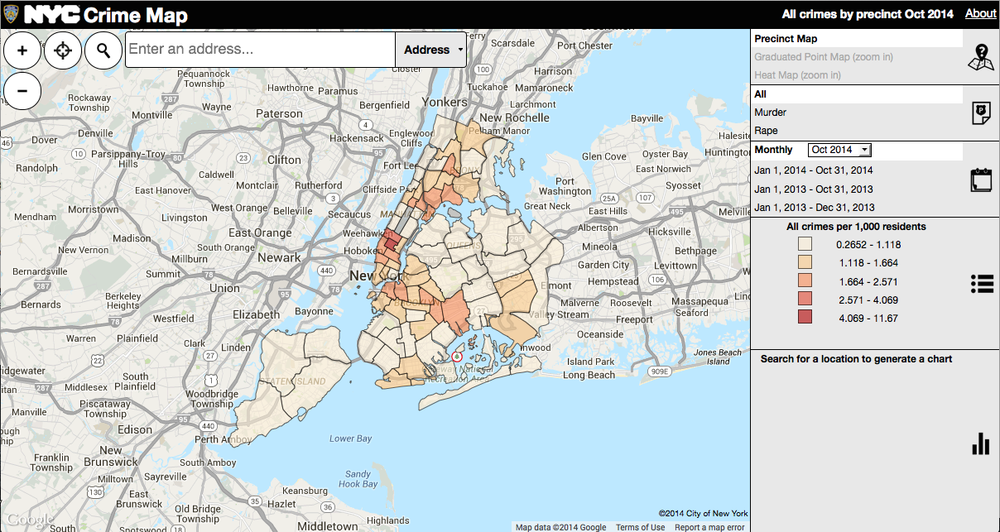

The purpose of this project was to apply computational techniques to a dataset. The data we obtained was taken from a pilot study done at MIT titled Place Pulse 1.0. Varied experimental methods in the original study led to an imbalance in the amount of information gathered from New York and Boston versus Linz and Salzburg. Furthermore, urban statistics and information is more readily available to us from American cities than European ones. Therefore, we used data solely from the cities of New York and Boston. After compiling all of the data, we organized it to create heat maps, processed it through a neural network and compared it with actual measures of crime and median income.
Using ARCGIs platform, we created a “heat map” by plotting every data point recorded in the Place Pulse 1.0 study on a scaled map of each city. In this instance, we compared the heat map of our data points in New York City with an actual crime map generated by the official website of New York City. Their heat map provides information on the nature of crime, as well as the changes in crime rate by borough over time.
You can download the csv files used in this analysis at this GitHub repository
%Load the data files into Matlab
cityTraining=csvread('CityTrainingData.csv');
cityTest=csvread('CityTestData.csv');
%Flip the training and test data rows and columns so the net can read it
flippedCityTraining=cityTraining';
flippedCityTest=cityTest’;
%Create a net with 2 categories
net = competlayer(2);
%Train the network using the training data set
net = train(net,flippedCityTraining);
view(net);
%Output the categories into a 2 dimensional array
y = net(flippedCityTraining);
%Vectorize the data into categories labeled 1 and 2
%1=Boston, 2=New York
classes = vec2ind(y);
%Run the test data through the trained net
ytest=net(flippedCityTest);
classestest=vec2ind(ytest);
%Load the data files into variables x and t
%x is your input matrix, t is your target matrix
x=csvread('MatlabCityDataInput.csv');
t=csvread('MatlabCityVectorTarget.csv');
%Clear the net and set a random stream to begin
clear net;
setdemorandstream(391418381);
%Set the number of neurons you want in the hidden layer
%We tried 5, 15, 20, 50, 100, 300, 500, and 1000
net = patternnet(1000);
view(net);
%Train the network using the inputs and targets
%Open the neural network training tool panel
[net,tr] = train(net,x,t);
nntraintool;
%Plot performance and a confusion matrix to see how the network performed
plotperform(tr);
testX = x(:,tr.testInd);
testT = t(:,tr.testInd);
testY = net(testX);
testIndices = vec2ind(testY);
plotconfusion(testT,testY);
[c,cm] = confusion(testT,testY);
%Output to the command line the percentage correctly and incorrectly classified
fprintf('Percentage Correct Classification : %f%%\n', 100*(1-c));
fprintf('Percentage Incorrect Classification : %f%%\n', 100*c);
%Plot receiver operating characteristic (roc) graph
plotroc(testT,testY);
Boston Statistical Analysis
| Class and Safety | Class and Uniqueness | Safety and Uniqueness | |
|---|---|---|---|
| r (correlation) | 0.858539099 | 0.669288808 | 0.650551205 |
| t | 58.699 | 31.579 | 30.03 |
| p (non-directional) | <.0001 | <.0001 | <.0001 |
New York Statistical Analysis
| Class and Safety | Class and Uniqueness | Safety and Uniqueness | |
|---|---|---|---|
| r (correlation) | 0.845598284 | 0.595867496 | 0.590285263 |
| t | 65.062 | 30.475 | 30.036 |
| p (non-directional) | <.0001 | <.0001 | <.0001 |
Points that rank in the top quartile for all categories (safety, class, uniqueness) in New York City

Points that rank in the top quartile for all categories (safety, class, uniqueness)in Boston

Crime vs. Perceptions of Safety in New York City:

(You can find the full interactive map here)

(You can find the full interactive map here)
There were notable differences in the data visualization between our data and the New York City crime map. The place pulse data shows that Midtown and lower Manhattan are overall perceived as high in safety, while the New York City crime map indicates that these areas actually have some of the highest crime rates in New York City (3-10 crimes per 1000 residents). We hypothesize that the large corporate presence in Manhattan, in terms of office and government buildings, may have misled participants in the Place Pulse Study into believing it to be a safer area, whereas in fact, crime is much more ubiquitous in Midtown and Lower Manhattan. In contrast to this finding, the areas around Upper Brooklyn, just below the Newtown Creek were generally perceived, in the place pulse study, as unsafe while these areas on the New York City crime map are either quite low in crime rates, or not nearly as high as Midtown or Lower Manhattan.
The NYC crime map also provided information on the kinds of crimes collected within the data. For most categories of crime, including rape, murder and armed burglaries, most of the crimes still seem to occur within the areas of Midtown and Manhattan. However, the NYC crime map showed us that crimes related to “Grand larceny of motor vehicles” are more prominent in Upper and Lower Brooklyn and Queens, both areas that have relatively lower crime rates than Manhattan or Midtown for all other kinds of crimes. Further research into this type of crime would be required to predict what role this may play in altering people’s perceptions of New York City’s safety.